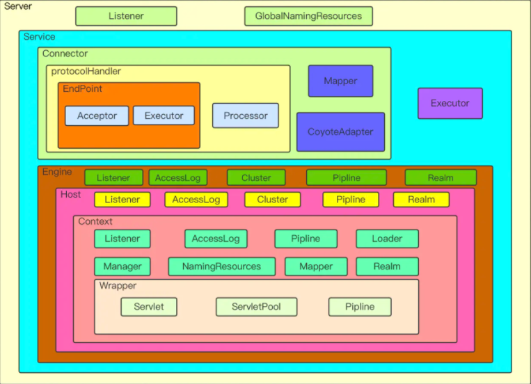
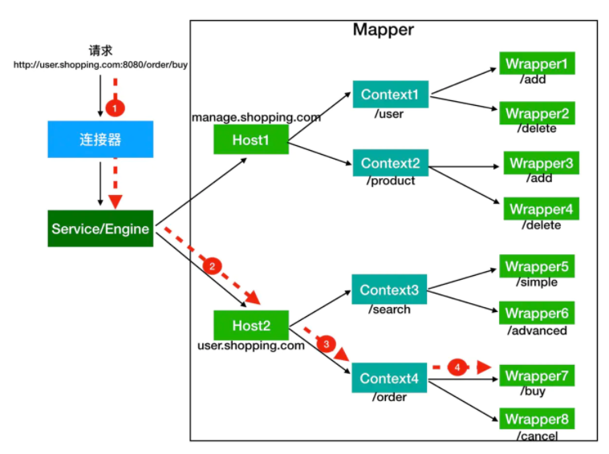

Tomcat
在阅读tomcat源码之前，有必要了解一下tomcat的多层容器设计，这样读起来会省很多力气。

上图就是tomcat的基本结构，可以很明显的看出层层嵌套的架构设计。简易启动一个tomcat的代码如下:
public static void main(String[] args) throws LifecycleException {
Tomcat tomcat = new Tomcat();
//设置路径
tomcat.setBaseDir("d:tomcat/dir");
Connector connector = new Connector();
//设置端口
connector.setPort(8080);
tomcat.getService().addConnector(connector);
Context context = new StandardContext();
//设置context路径
context.setPath("");
context.addLifecycleListener(new Tomcat.FixContextListener());
tomcat.getHost().addChild(context);
//添加servlet
tomcat.addServlet("", "homeServlet", new HomeServlet());
//设置servlet路径
context.addServletMappingDecoded("/", "homeServlet");
tomcat.start();
tomcat.getServer().await();
}
下面就来分析一下这段启动代码的逻辑。首先进入tomcat的start方法。
public void start() throws LifecycleException {
getServer();
server.start();
}
可以看到先是通过getServer方法判断是否存在server容器。如果不存在则新建。server容器就是结构图的最外层容器了。随后进入server的start方法。进入之后会发现server继承了LifecycleBase这个抽象类，而LifecycleBase实现了Lifecycle接口。这个接口就是控制容器生命周期的接口。查看接口方法可以看到有init，start和stop方法。我们先看看LifecycleBase的start方法
public final synchronized void start() throws LifecycleException {
...
if (state.equals(LifecycleState.NEW)) {
init();
}
...
try {
...
startInternal();
...
} catch (Throwable t) {
...
}
}
可以看到在start方法中，根据容器的状态控制了容器的启动流程。在启动时候任一点出错的话，可以安全的退出。这样的话每个容器就只需要关注自己的init方法和startInternal方法就可以了。现在查看一下server的startInternal方法。
protected void startInternal() throws LifecycleException {
...
// Start our defined Services
synchronized (servicesLock) {
for (int i = 0; i < services.length; i++) {
services[i].start();
}
}
...
}
可以看到server的startInternal方法主要任务就是启动service。这也正好是开始那个tomcat结构图的结构，外层控制内层容器的启动。接下来看看service容器的启动。直接查看StandardService的init方法和start方法。
protected void initInternal() throws LifecycleException {
if (engine != null) {
engine.init();
}
...
mapperListener.init();
synchronized (connectorsLock) {
for (Connector connector : connectors) {
connector.init();
}
}
}
在service的init方法中，首先初始化了engine，然后初始化mapper，最后初始化connector。这也很好理解，因为只有内部启动之后才能对外提供服务。
接下来先看看engine的启动，在看engine启动前，需要先了解下engine里面各层容器的作用。
Context 表示一个 Web 应用程序；Wrapper 表示一个 Servlet，一个 Web 应用程序中可能会有多个 Servlet；Host 代表的是一个虚拟主机，或者说一个站点，可以给 Tomcat 配置多个虚拟主机地址，而一个虚拟主机下可以部署多个 Web 应用程序；Engine 表示引擎，用来管理多个虚拟站点，一个 Service 最多只能有一个 Engine。
他们对外提供服务的路由是这样的。

在搞清楚这层关系之后，再看engine的启动就很简单了。engine管理的几个容器host，context和wrapper比之前多了一个继承就是 ContainerBase。他们的实现都继承了这个类。所以要研究的话直接看下这个类的实现。
在ContainerBase里，子类是以map的形式存在hash表中
protected final HashMap<String, Container> children = new HashMap<>();
看一下ContainerBase的start方法。
protected synchronized void startInternal() throws LifecycleException {
...
Container children[] = findChildren();
List<Future<Void>> results = new ArrayList<>();
for (int i = 0; i < children.length; i++) {
results.add(startStopExecutor.submit(new StartChild(children[i])));
}
MultiThrowable multiThrowable = null;
for (Future<Void> result : results) {
try {
result.get();
} catch (Throwable e) {
...
}
}
...
}
可以看到在父容器的启动方法中，逐个的启动了子类容器。这样的话tomcat的大体启动流程就差不多了解了。接下来要做的就是根据具体功能，分析单个组件。
Tomcat如何接收请求
创建过程
首先看一下Connector的创建过程。
Connector connector = new Connector();
public Connector() {
//默认的连接器协议是nio的http 1.1协议
this("org.apache.coyote.http11.Http11NioProtocol");
//创建过程只是简单调用一下构造函数
}
//所以可以直接看Http11NioProtocol的创建过程
public Http11NioProtocol() {
super(new NioEndpoint());
}
//可以看到在Http11NioProtocol中，自己新建了一个EndPoint这也正好对应了上一节tomcat的结构图
启动过程
创建过程看完了下面来看看启动过程，因为上一节已经说过了tomcat的容器结构，所以启动过程可以直接从Connector的init方法开始
protected void initInternal() throws LifecycleException {
...
try {
protocolHandler.init();
} catch (Exception e) {
...
}
}
Connector的init方法，除了设置一些初始化值外，就是调用protocolHandler的init方法了。所以查看protocolHandler的init方法，
//查看AbstractProtocol中的init方法
public void init() throws Exception {
...
String endpointName = getName();
endpoint.setName(endpointName.substring(1, endpointName.length()-1));
endpoint.setDomain(domain);
endpoint.init();
}
在进行了一些初始化设置之后调用了endpoint的init方法。进入endpoint查看
//进入AbstractEndpoint的init方法
public final void init() throws Exception {
if (bindOnInit) {
bindWithCleanup();
bindState = BindState.BOUND_ON_INIT;
}
...
}
private void bindWithCleanup() throws Exception {
try {
bind();
} catch (Throwable t) {
...
}
}
public void bind() throws Exception {
//初始化ServerSocket
initServerSocket();
...
selectorPool.open();
}
//这边可以看到初始化ServerSocket的方法，还有初始化了一个selector，但是这个连接器不是在接收连接时候用的，暂时先放一放
protected void initServerSocket() throws Exception {
if (!getUseInheritedChannel()) {
//绑定端口的方法和我们平时开发都一样。
serverSock = ServerSocketChannel.open();
socketProperties.setProperties(serverSock.socket());
InetSocketAddress addr = new InetSocketAddress(getAddress(), getPortWithOffset());
serverSock.socket().bind(addr,getAcceptCount());
} else {
...
}
serverSock.configureBlocking(true); //mimic APR behavior
}
init过程到这个就结束了，这个时候端口就已经绑定了，下一步去看看接收的socket如何处理。
查看Connector的start方法。
protected void startInternal() throws LifecycleException {
//...
try {
protocolHandler.start();
} catch (Exception e) {
...
}
}
public void start() throws Exception {
//...
endpoint.start();
//...
}
public final void start() throws Exception {
if (bindState == BindState.UNBOUND) {
//刚刚init的时候已经绑定了，所以这边不会在绑定一次
bindWithCleanup();
bindState = BindState.BOUND_ON_START;
}
//直接会进入start方法
startInternal();
}
public void startInternal() throws Exception {
if (!running) {
running = true;
paused = false;
//一些缓存类的初始化
processorCache = new SynchronizedStack<>(SynchronizedStack.DEFAULT_SIZE,
socketProperties.getProcessorCache());
eventCache = new SynchronizedStack<>(SynchronizedStack.DEFAULT_SIZE,
socketProperties.getEventCache());
nioChannels = new SynchronizedStack<>(SynchronizedStack.DEFAULT_SIZE,
socketProperties.getBufferPool());
// Create worker collection
if ( getExecutor() == null ) {
//初始化线程池，这个待会再说
createExecutor();
}
initializeConnectionLatch();
//先看一下Poller线程和Acceptor线程
pollers = new Poller[getPollerThreadCount()];
for (int i=0; i<pollers.length; i++) {
pollers[i] = new Poller();
Thread pollerThread = new Thread(pollers[i], getName() + "-ClientPoller-"+i);
pollerThread.setPriority(threadPriority);
pollerThread.setDaemon(true);
pollerThread.start();
}
startAcceptorThreads();
}
}
在endpoint启动的过程中，我们看到他启动了两个不同名称的线程一个叫Poller，一个叫Acceptor。这两个线程从名字也可以看出，一个是接收socket的，另一个是分发任务的。分别查看他们代码。
//虽然启动是先启动poller，但是我们需要先查看acceptor
public Acceptor(AbstractEndpoint<?,U> endpoint) {
//初始化放入endpoint
this.endpoint = endpoint;
}
//因为继承了Runnable类，所以查看run方法
public void run() {
int errorDelay = 0;
while (endpoint.isRunning()) {
//...
try {
//如果达到最大连接就阻塞
endpoint.countUpOrAwaitConnection();
//...
try {
//...
//接收新建立的socket
socket = endpoint.serverSocketAccept();
} catch (Exception ioe) {
//...
}
//...
if (endpoint.isRunning() && !endpoint.isPaused()) {
//...
//在set方法中新socket会被推给poller处理
if (!endpoint.setSocketOptions(socket)) {
endpoint.closeSocket(socket);
}
} else {
endpoint.destroySocket(socket);
}
} catch (Throwable t) {
...
}
}
state = AcceptorState.ENDED;
}
acceptor的方法主要分为几步。
- 判断连接数量是否超过限制
- 新建立连接并设置相关属性
- 将接收到的连接推给poller
下面接着看是怎么推送给poller的
protected boolean setSocketOptions(SocketChannel socket) {
try {
//...设置一些属性值
//在这边会吧任务注册到poller
getPoller0().register(channel);
} catch (Throwable t) {
//...
}
return true;
}
public void register(final NioChannel socket) {
//注册的过程也很简单，往poller的队列里添加了一个任务
addEvent(r);
}
接下来就看看poller怎么处理了
//因为poller也是实现了Runnable接口，所以也直接查看run方法
public void run() {
// Loop until destroy() is called
while (true) {
boolean hasEvents = false;
try {
if (!close) {
处理任务队列的任务
hasEvents = events();
...
}
if (close) {
...
}
} catch (Throwable x) {
...
}
Iterator<SelectionKey> iterator =
keyCount > 0 ?selector.selectedKeys().iterator() : null;
while (iterator != null && iterator.hasNext()) {
SelectionKey sk = iterator.next();
NioSocketWrapper attachment = (NioSocketWrapper)sk.attachment();
if (attachment == null) {
iterator.remove();
} else {
iterator.remove();
processKey(sk, attachment);
}
}
timeout(keyCount,hasEvents);
}
getStopLatch().countDown();
poller任务分两部，一是处理任务队列，二是处理注册的socket
先看处理任务队列
public boolean events() {
boolean result = false;
PollerEvent pe = null;
for (int i = 0, size = events.size(); i < size && (pe = events.poll()) != null; i++ ) {
result = true;
try {
//处理任务队列相对简单，只是调用一下run方法
pe.run();
pe.reset();
...
} catch ( Throwable x ) {
...
}
}
return result;
}
public void run() {
if (interestOps == OP_REGISTER) {
try {
//在run方法中，socket会将自己注册到poller的selector上
socket.getIOChannel().register(
socket.getPoller().getSelector(), SelectionKey.OP_READ, socketWrapper);
} catch (Exception x) {
log.error(sm.getString("endpoint.nio.registerFail"), x);
}
} else {
...
}
}
此时刚刚accpetor推送过来的socket已经被注册到poller上了。接下来看看poller对socket的处理
protected void processKey(SelectionKey sk, NioSocketWrapper attachment) {
try {
if ( close ) {
cancelledKey(sk);
} else if ( sk.isValid() && attachment != null ) {
if (sk.isReadable() || sk.isWritable() ) {
if ( attachment.getSendfileData() != null ) {
processSendfile(sk,attachment, false);
} else {
unreg(sk, attachment, sk.readyOps());
boolean closeSocket = false;
//主要看看processSocket方法
if (sk.isReadable()) {
if (!processSocket(attachment, SocketEvent.OPEN_READ, true)) {
closeSocket = true;
}
}
if (!closeSocket && sk.isWritable()) {
if (!processSocket(attachment, SocketEvent.OPEN_WRITE, true)) {
closeSocket = true;
}
}
if (closeSocket) {
cancelledKey(sk);
}
}
}
} else {
//invalid key
cancelledKey(sk);
}
} catch ( CancelledKeyException ckx ) {
...
}
}
public boolean processSocket(SocketWrapperBase<S> socketWrapper,
SocketEvent event, boolean dispatch) {
try {
if (socketWrapper == null) {
return false;
}
//封装了socket任务
SocketProcessorBase<S> sc = processorCache.pop();
if (sc == null) {
sc = createSocketProcessor(socketWrapper, event);
} else {
sc.reset(socketWrapper, event);
}
//将socket任务丢给线程池执行。
Executor executor = getExecutor();
if (dispatch && executor != null) {
executor.execute(sc);
} else {
sc.run();
}
} catch (RejectedExecutionException ree) {
...
} catch (Throwable t) {
...
}
return true;
}
分析到这儿的话，tomcat对于接收连接的处理就差不多了。我们已经了解了acceptor和poller是如何协作的。最后在看看tomcat中线程池。
回到刚刚线程池创建的地方
public void createExecutor() {
internalExecutor = true;
//这个队列就是对LinkedBlockingQueue的简单封装
TaskQueue taskqueue = new TaskQueue();
TaskThreadFactory tf = new TaskThreadFactory(getName() + "-exec-", daemon, getThreadPriority());
//线程池也是对于jdk线程池的封装，不同的是在启动是，就已创建好了全部核心线程。
executor = new ThreadPoolExecutor(getMinSpareThreads(), getMaxThreads(), 60, TimeUnit.SECONDS,taskqueue, tf);
taskqueue.setParent( (ThreadPoolExecutor) executor);
}
public void execute(Runnable command, long timeout, TimeUnit unit) {
submittedCount.incrementAndGet();
try {
super.execute(command);
} catch (RejectedExecutionException rx) {
//在使用tomcat线程池时候执行上面有这个逻辑
if (super.getQueue() instanceof TaskQueue) {
final TaskQueue queue = (TaskQueue)super.getQueue();
try {
//如果初次提交任务被拒绝，则会调用TaskQueue的force方法在尝试一次，如果还是失败的话才会抛出异常。
if (!queue.force(command, timeout, unit)) {
submittedCount.decrementAndGet();
throw new RejectedExecutionException(sm.getString("threadPoolExecutor.queueFull"));
}
} catch (InterruptedException x) {
submittedCount.decrementAndGet();
throw new RejectedExecutionException(x);
}
} else {
submittedCount.decrementAndGet();
throw rx;
}
}
}